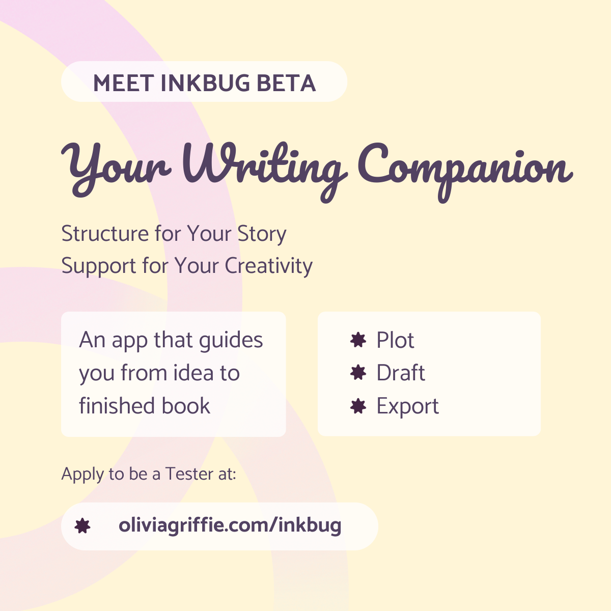
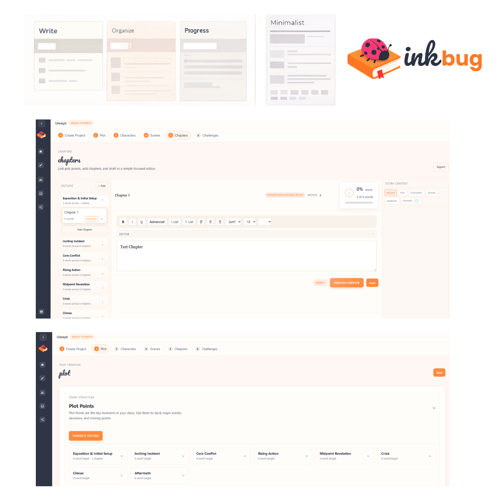
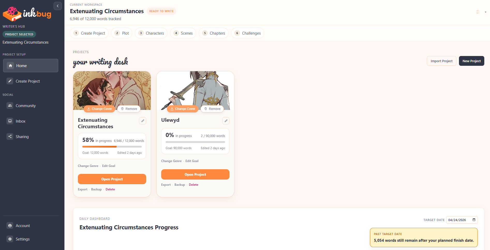
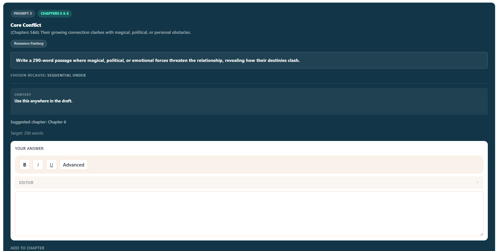

Scrivener
Powerful, but steep learning curve. Writers feel overwhelmed before they've written a word.
App Build
Inkbug is a desktop writing application I designed and built in Electron to help authors move from early ideas to a finished manuscript without losing clarity, structure, or momentum along the way.

Inkbug is a writing companion app I created from scratch — concept, user flow, visual identity, and entire interface. My goal was to build a tool that supports authors with structure, clarity, and motivation without overwhelming them.
My Role
Founder & Senior Visual Designer. I owned product strategy, UX architecture, UI design, visual identity, front-end styling, and the component library.
Current State
Beta with one active project slot while multi-project functionality is tested and expanded.
Writers told me they wanted something in the middle — organized, warm, and creative. Not clinical or chaotic.
Powerful, but steep learning curve. Writers feel overwhelmed before they've written a word.
Flexible but blank-canvas paralysis. No writing-specific structure or built-in motivation.
Clean but sterile. Nothing about the interface inspires a writer to open it every day.

The IA is organized into three modes so writers never lose their place in the process. Each section feeds into the next — planning feeds drafting, drafting feeds progress.
Every interface decision is backed by a component library and token system. This is what makes the product feel intentional at every screen — not just the hero view.
The final experience spans a full dashboard, chapter workspace, writing challenges, character sheets, progress tracking, and a writing environment for focused drafting. Key screens below.


Beta access is limited. If you're working on a manuscript and want a writing tool built around your actual process, apply below.